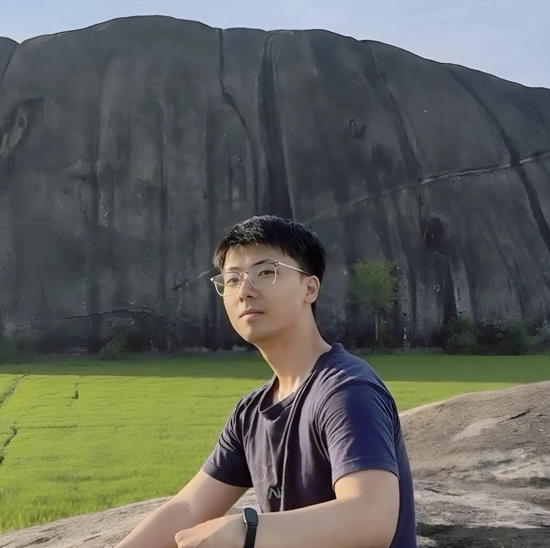

Me at my beautiful hometown, Vietnam
About me
Xin chào! 🇻🇳
I'm Binh (Quang-Binh Nguyen), an AI Research Resident at Qualcomm AI Research, Vietnam, mainly working with Dr. Khoi Nguyen on controllable visual generative models. I received my B.S. in Information Technology (Honors Program) from VNU-HCM University of Science, advised by Prof. Minh-Triet Tran and Dr. Trung-Nghia Le.
My long-term dream is to build embodied AI that becomes genuinely useful to a person by understanding them over time: not just a machine that completes tasks, but a collaborator that makes a life happier.
Research interests
I work toward personalized intelligence, from the digital world to the physical one.
Picture a home robot helping an elderly person. The capability that matters is not better perception in the moment; it is memory of this person, built from ordinary observation and turned into timely, reliable help. I see this as one problem viewed from three sides:
-
Understanding people and the things around them
How can a system learn a specific person or object from only a few examples, well enough to generalize to situations it has never seen rather than memorizing what it was shown?
-
Understanding the machine
How do we interpret a model's internal structure well enough to extend it to new tasks, without retraining and without losing what it could already do?
-
The interaction itself
How is a working relationship between a person and a machine actually formed, and what makes that collaboration effective and reliable?
-
Looking ahead: personalized intelligence in the physical world
What should a robot remember about a person from weeks of ordinary life? What should it do with that memory: act, ask, or wait? And how do we know its help was actually good?
Selected publications
* denotes equal contribution.
All publications with detailsProfessional service
- Conference reviewer CVPR 2026AAAI 2026★ NeurIPS 2026 Top Reviewer
- Journal reviewer TPAMI
Get in touch
Always happy to chat about research, life stuff, or just to say Xin chào!